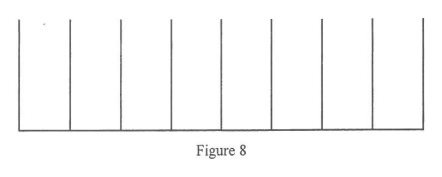

題目
Ada 與 Billy 進行一個包含兩回合的遊戲。第一回合中，Ada 與 Billy 輪流擲一枚勻稱骰子，首先擲得「3」者勝出第一回合。Ada 與 Billy 進行第一回合，並由 Ada 先擲。
(a) 求 Ada 勝出第一回合的概率。
(b) 在遊戲的第二回合，球被逐一投進一個裝有八條並排管子的裝置（見圖 8）。當球被投進裝置時，它隨機落入其中一條管子。每條管子最多可容納三個球。
第二回合的玩家採用以下兩個選項之一。
選項 1：逐一投進兩個球。若兩球落入同一條管子，可得 10 個代幣；若兩球落入兩條相鄰的管子，可得 5 個代幣；否則得 0 個代幣。
選項 2：逐一投進三個球。若三球落入同一條管子，可得 50 個代幣；若三球落入三條相鄰的管子，可得 10 個代幣；若三球落入兩條相鄰的管子，可得 5 個代幣；否則得 0 個代幣。
(i) 若第二回合的玩家採用選項 1，求所得代幣數目的期望值。
(ii) 第二回合的玩家應採用哪一個選項，才可使所得代幣數目的期望值最大？試解釋。
(iii) 只有第一回合的勝出者才玩第二回合。已知第二回合的玩家採用可使所得代幣數目的期望值最大的選項。Billy 聲稱 Ada 在遊戲中得不到任何代幣的概率超過 $0.9$。該聲稱是否正確？試解釋。

圖（原卷附圖）
題解
第 1 步
(a) 把 Ada 各次勝出的概率加起來
無窮等比級數
\(S_{\infty}=\dfrac{a}{1-r}\quad (|r|<1)\)
Ada 在第 $1$、$2$、$3$… 次投擲勝出的概率成等比數列，公比為 $\left(\dfrac{5}{6}
ight)^{2}$。
Ada 在自己第 $k$ 次投擲勝出，意即之前 $2(k-1)$ 次投擲（Ada、Billy 各 $k-1$ 次）都沒有擲得「3」，
然後 Ada 擲得「3」：
\[ P(\text{Ada wins on her }k\text{-th throw})=\left(\frac{5}{6}\right)^{2(k-1)}\cdot\frac{1}{6}. \]
故
\[ P(\text{Ada wins})=\frac{1}{6}+\left(\frac{5}{6}\right)^{2}\frac{1}{6}+\left(\frac{5}{6}\right)^{4}\frac{1}{6}+\cdots \]
\[ =\frac{1}{6}\left[1+\frac{25}{36}+\left(\frac{25}{36}\right)^{2}+\cdots\right]=\frac{1}{6}\cdot\frac{1}{1-\frac{25}{36}}=\frac{1}{6}\cdot\frac{36}{11}=\frac{6}{11}. \]
第 2 步
(b)(i) 逐項計算選項 1 的期望值
期望值
\(E(X)=\sum x\,P(X=x)\)
把每個代幣數目乘以其概率再相加；兩個球各有 $8$ 個選擇，共 $8^{2}$ 個等可能結果。
兩球逐一投進，共 $8\times8=64$ 個等可能結果。
同一條管子：$8$ 個結果，概率 $=\dfrac{8}{64}=\dfrac{1}{8}$。
兩條相鄰的管子：$7$ 對相鄰管子，每對有 $2$ 個次序，共 $14$ 個結果，
概率 $=\dfrac{14}{64}=\dfrac{7}{32}$。
故
\[ E_{1}=10\times\frac{1}{8}+5\times\frac{7}{32}=\frac{5}{4}+\frac{35}{32}=\frac{75}{32}=2.34375. \]
第 3 步
(b)(ii)(iii) 比較兩個選項，再用全概率求 Ada 無代幣的概率
全概率定理
\(P(A)=P(A\mid W)P(W)+P(A\mid L)P(L)\)
把「Ada 得不到代幣」分成「Ada 勝出第一回合」與「Billy 勝出第一回合」兩種情形相加。
(ii) 選項 2：三球共 $8^{3}=512$ 個等可能結果。
同一條管子：$8$ 個結果；
三條相鄰的管子：$6$ 組連續三條，每組 $3!$ 個次序，共 $36$ 個結果；
兩條相鄰的管子：$7$ 對管子，每對有 $2^{3}-2=6$ 個結果，共 $42$ 個結果。
故
\[ E_{2}=50\times\frac{8}{512}+10\times\frac{36}{512}+5\times\frac{42}{512}=\frac{400+360+210}{512}=\frac{485}{256}\approx1.895. \]
因 $E_{1}=\dfrac{75}{32}=\dfrac{600}{256}>\dfrac{485}{256}=E_{2}$，應採用選項 1。
(iii) 採用選項 1 時，Ada 得到代幣的概率為 $\dfrac{1}{8}+\dfrac{7}{32}=\dfrac{11}{32}$，
故得不到代幣的概率為 $1-\dfrac{11}{32}=\dfrac{21}{32}$。
若 Billy 勝出第一回合（概率 $\dfrac{5}{11}$），Ada 根本不玩第二回合，
必得 $0$ 個代幣。
由全概率定理，
\[ P(\text{Ada gets no tokens})=\frac{5}{11}\times1+\frac{6}{11}\times\frac{21}{32}=\frac{5}{11}+\frac{63}{176}=\frac{143}{176}=\frac{13}{16}=0.8125. \]
$0.8125$ 不超過 $0.9$，故 Billy 的聲稱不正確。
答案(a) $\dfrac{6}{11}$ (b)(i) $\dfrac{75}{32}$（$=2.34375$） (b)(ii) 應採用選項 1，因 $\dfrac{600}{256}>\dfrac{485}{256}$ (b)(iii) 不正確：$P(\text{Ada gets no tokens})=\dfrac{13}{16}=0.8125$，不超過 $0.9$